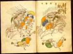

Liber I Machabaeorum; Flavius Vegetius Renatus, Epitome institutorum rei militaris (en stukken van een veel latere hand). Latijn. Handschrift op perkament, 149 ff., 252 x 185 mm. Vermoedelijk begonnen in Sankt Gallen en voltooid in de abdij Reichenau (Zwitserland), circa 925(?) -- (PER F 17)
De achtentwintig bladgrote illustraties van het krijgsbedrijf in dit handschrift gelden in menig Duits geschiedenisboek als de vroegst bekende afbeeldingen van een historische strijd. Ze zouden zijn geïnspireerd op de verwoestende invallen van de Hongaren in Zuid-Duitsland en Zwitserland in het jaar 925. De tekst vertelt echter het verhaal van de opstand van het Joodse volk onder leiding van de Makkabeeën tegen de Syrische overheersing.
Details in de voorstellingen, met name in de wapenrusting, zoals de pothelmen en stijgbeugels van de ruiters, zijn ongetwijfeld typisch middeleeuws. In dat opzicht passen de miniaturen in de traditie van die tijd, waarin het gebruik was gebeurtenissen uit het verleden zo veel mogelijk van een eigentijdse aankleding te voorzien. Dat neemt niet weg dat de afbeeldingen, naar thans wordt aangenomen, teruggaan op een vroeg-christelijke traditie, die maar oppervlakkig door latere elementen is beïnvloed.
Enig verband met de invallen van de Hongaren is echter goed denkbaar. De stof van het handschrift, zowel het boek der Makkabeeën als de verhandeling van Vegetius over de krijgskunst, waren in die dagen voor de monniken van Sankt Gallen actueler dan ooit. De getoonde taferelen op de folia 45v en 46r moeten in samenhang worden gezien, links de aanvallers, rechts de achtervolgers. Evenals elders staan de scènes in de vrije ruimte en is het landschap maar met een paar lijnen aangeduid.
Literatuur
- A. Merton, Die Buchmalerei in Sankt Gallen. Leipzig 1912, p. 64-66, 83.
- A.W. Byvanck, Les principaux manuscrits à peintures conservés dans les collections publiques du Royaume des Pays-Bas, Paris 1931 ( = Bulletin de la Société francaise de reproduction des manuscrits à peintures. 15), p. 68-69.
- [K.A. de Meyïer], Codices Perizoniani. Lugduni Batavorum 1946 ( = Bibliotheca Universitatis Leidensis. Codices manuscripti. IV), p. 21-23.
- Suevia sacra. Frühe Kunst in Schwaben. Augsburg 1973, nr. 158.
- Otto Pächt, Buchmalerei des Mittelalters. Eine Einführung. München 1984, p. 30, 139.
| vorige pagina | top pagina |